Find text
Every block of writing on the page, boxed. comic-text-detector runs on your machine - no upload, no cost.
Manga | manhwa | manhua
MangaTCT finds every block of text, reads it, translates it with your glossary and your character sheet, wipes the original off the art and sets the English back into the balloon. Then it hands you all of it: every line, every block, every bubble, down to the outline colour.
Free credits on signup, no card. Finding text, cleaning and typesetting run on your own machine and cost nothing.
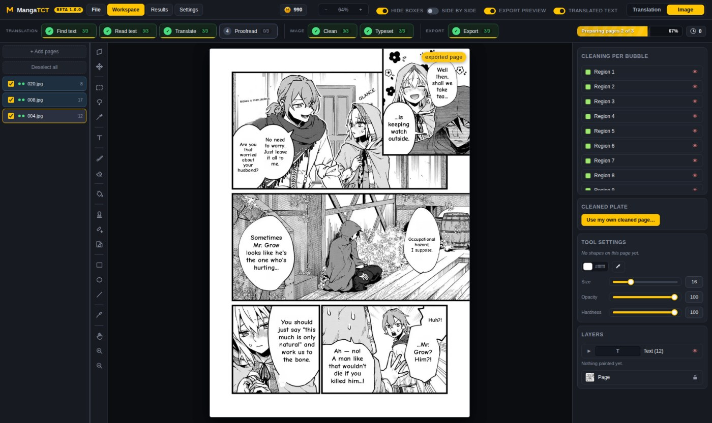
Drag it
One file, both ends of the pipeline. Pull the handle across.
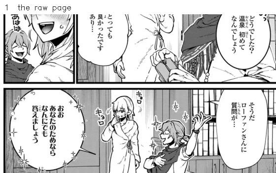
Find and read, clean, typeset. Each stage is a step you can run, undo and run again on one page or the whole chapter.
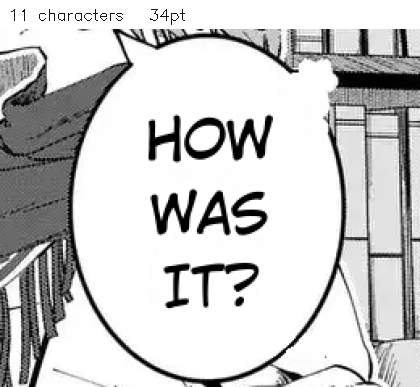
Same balloon, four lengths of English. It changes the breaks and the size - 34pt down to 16pt - and never the words.
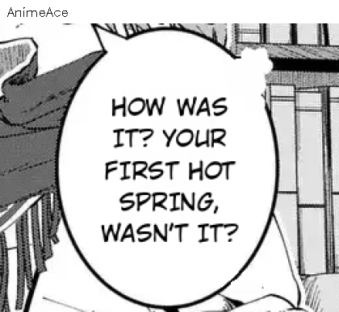
A font is a decision about a block, not about a chapter. Change it on one bubble and nothing else moves.
The pipeline
The bar says where the chapter is - a count on every button and a fill under it. It does not decide what you are allowed to press: run any step, in any order, on any pages you like.
Translation
Every block of writing on the page, boxed. comic-text-detector runs on your machine - no upload, no cost.
The Japanese, Korean or Chinese out of each box. Whole page in one request, or the page cut up for the small print.
Every box on the page in one go, with the synopsis, the character sheet and the glossary in front of it - so honorifics and names stay the same on page 39 as on page 1.
A second pass, only if you want one. It reads the page as a page: pronouns with no owner, a name one letter off the sheet, a line that does not answer the one before it. It writes a report you can read, and it changes nothing without you. Skip it and everything else works exactly the same.
Image
The Japanese comes off. Flat fill, tone copy, or the AI cleaner for the hard bits. Every bubble tells you which it used.
The English goes in. Line breaks first, then size - never a hyphen, never a cut sentence, never a word split.
Out
The finished pages. Or the cleaned plates. Or a sheet with every box numbered, for someone else to typeset.
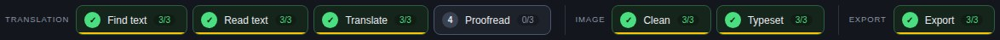
Three formats
All three are supported end to end. They are not the same job, though, and a tool that pretends they are is a tool that hands you a Korean chapter numbered backwards. Here is what actually differs - including the parts that are still rough.
The format the rest of it was built around.
JapaneseRight to left
What it does well
Where it is rough
Webtoon strips get cut into pages before anything else runs.
KoreanLeft to right
What it does well
Where it is rough
pip install easyocr. Or point Read text at a vision model and skip it entirely - that path needs nothing installed.Simplified out of the box; traditional through a vision model.
ChineseLeft to right
What it does well
Where it is rough
pip install easyocr, or use a vision model.Everything AFTER the words is the same for all three: cleaning, fitting, typesetting, the effects and the export do not know which format they are working on, and that is deliberate. Out comes English, Spanish, Portuguese or French.
The screens
Open a chapter, add pages, reorder them. One screen, one job.
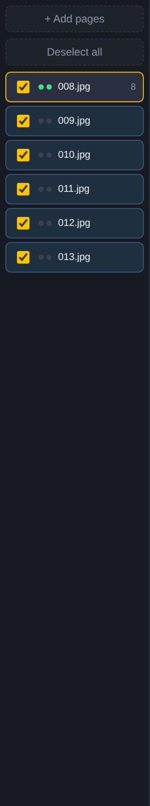
The page. Boxes on the left of the split, typesetting on the right, every tool down the rail. This is where the work happens.

The proofread report and the chapter audit - what the second pass found, page by page, with the original beside it.
Fonts, box types, languages, models, cleaning. Per chapter, and remembered.

Editorial control
This is the part most tools skip. Everything the pipeline decided is a value you can see and change, on the page, without leaving the editor and without starting again.
The text list is the translation: one row per piece of source text, what it says and what it will say, and how sure the reader was. Open a row and both are fields - retype either. Change what kind of box it is, split it in two, or link it to the bubble it carries on into.
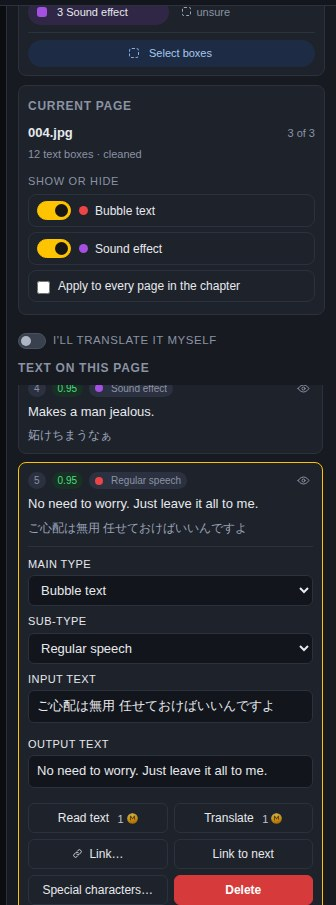
Font, size, rotation, curve, line gap, letter gap, caps. Text colour, outline colour, both as gradients. Shadow, outer glow, inner glow. Per block - not per page, not per chapter.
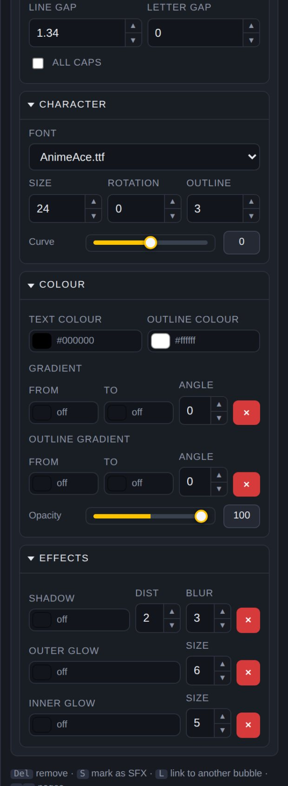
The page says which route cleaned each bubble - filled flat, tone copied, locally, by the AI - so you can see what it did before you trust it. Or drop in your own cleaned plate and skip the step.
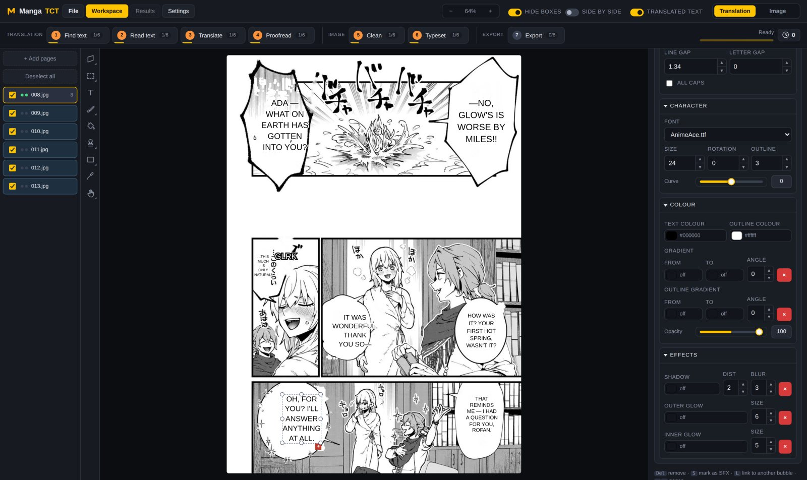
What it will not do
A tool that quietly edits your translation to make it fit is not saving you work - it is hiding work you now have to find.
Never reworded to fit, never trimmed, never split across two boxes. The fitter changes the line breaks and the size, and that is all it is allowed to change.
It will not break a word to make it fit. A dash the author typed - S-S-S-SORRY!! - is a different thing and survives exactly as written.
It will not quietly swap a character for one your face happens to have, and it will not hand a line to a different family. If your font is short of a glyph, the box says so.
If a re-run cannot typeset a bubble - a bad font, an empty mask - the typesetting already on the page stays. A blank bubble is never an answer.
Draw a text box and it is independent: no detection behind it, not in the translation list, not counted as text to translate. Uploading a new translation does not sweep it away.
Finding text, cleaning and typesetting run locally. Reading and translating go to whichever model you point them at - including one on your own machine.
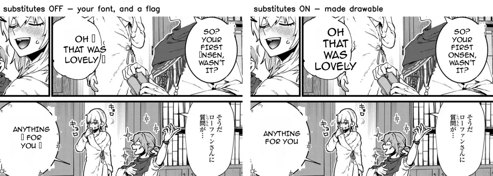
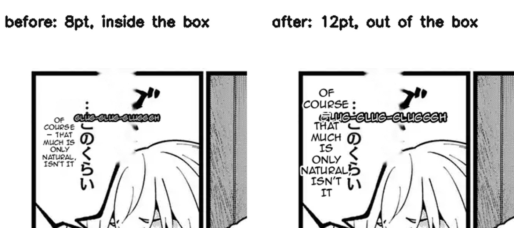
The models
Reading, translating and proofreading each take their own service and their own model, so you can put a cheap fast one on the reading and a careful one on the words. Claude, Google AI Studio or OpenRouter - one key per service, not one per step - or a model running on your own machine.
The menu only ever offers models this app can PRICE and your key can actually REACH, crossed together. A model you cannot run never appears in it, and neither does one nobody has priced. Nothing a generation behind is offered at all.
Or do it entirely by hand. Turn on manual translation and the three model steps go quiet. You get a labelled text file with every box numbered the way the box sheet numbers it, the original beside each one and room to type underneath. Fill in as much as you like, upload it back, and whatever is in it wins.
Six, from about a penny a chapter to about four dollars. Every one of them is priced per text box on what it really costs to run, and the calculator on the coins page will tell you the number before you spend anything.
The cheapest thing that does the job. Fine for reading text off a page.
A generation newer for not much more. A good default.
Claude's small one. Better at holding a voice than its price suggests.
Fast, and it thinks before it answers. The usual choice for translating.
The one most people proofread with. Catches what the others miss.
The best there is, and priced like it. Worth it on a page that matters.
Or your own key, or a model on your own machine, in which case none of this costs anything here.
Compared
Doing it by hand gives you total control and costs you a day a chapter. A one-click translator gives you a chapter in a minute and no way to fix what it got wrong. This sits in the middle on purpose.
| By hand in Photoshop | One-click auto-translate | MangaTCT | |
|---|---|---|---|
| Detection, reading and translation | by hand, box by box | one pass, whole chapter | one pass, whole chapter |
| Where the English goes | you place every block | you place every block | fitted, then you correct it |
| Change one bubble's font | yes | yes | yes |
| Gradients, glow, curve, rotation per block | yes | yes | yes |
| Draw, clone, heal and erase on the page | yes | yes | yes |
| Reading order enforced across the chapter | you track it | you track it | numbered, and re-numbered when you drag |
| Glossary and character sheet applied to every page | you remember | you remember | carried into every request |
| Runs the model you choose, or none at all | no model | fixed | per step, including local |
| Translate it entirely by hand | yes | no | yes - a labelled file out, filled in, back |
| Webtoon strips cut into pages | you cut them | rarely | on upload, at the gutters |
| Your own cleaned pages | they are yours | rarely | drop them in |
The middle column describes the general class of one-click page translators, not any single product.
Credits
Make an account and it comes with credits - enough to take a chapter through end to end before you decide anything. After that you top up, and only the steps that call a model cost anything.
On signup. No card. Run a real chapter, not a demo page.
Credits are spent by the steps that call a model - reading, translating, proofreading, and AI cleaning if you turn it on.
Point the steps at your own key or your own local model and it costs you nothing here. Finding text, cleaning and typesetting never cost credits.
Questions
A machine with Python. The text detector is a single model file you download once and it runs on the processor - no graphics card needed. Reading and translating need an API key for whichever model you pick, or a local one; cleaning can run entirely offline.
Finding text, cleaning, typesetting and exporting never leave your machine. Reading and translating send the page - or just the text - to the model you chose. Point them at something running on your own computer and nothing leaves at all.
A chapter uploaded as identical tiles is re-cut into pages near 2,400px on upload, at the gutters, and your tiles are kept. It is done because the detector sees a whole page at one size, so on a 10,000px strip the text arrives too small to find. A single genuinely enormous image that was never tiled is still the weak spot - cut it up first.
English, Spanish, Portuguese and French. The prompt is warned that Spanish and Portuguese run about a fifth longer than English and French about a quarter, because that is the difference between a balloon that fits and one that does not.
Yes. Turn on manual translation and the three model steps go quiet. Download a labelled text file with every box numbered, fill it in, upload it back - or type straight into the page.
No. It typesets a chapter today and it is being worked on most days. The parts that have settled - finding text, reading it, translating, cleaning - are the parts that get left alone.